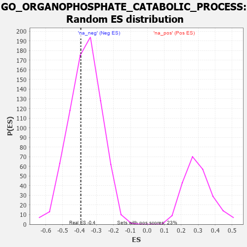

| | | Dataset | 7d |
| Phenotype | NoPhenotypeAvailable |
| Upregulated in class | na_neg |
| GeneSet | GO_ORGANOPHOSPHATE_CATABOLIC_PROCESS |
| Enrichment Score (ES) | -0.3929035 |
| Normalized Enrichment Score (NES) | -1.0665606 |
| Nominal p-value | 0.3929961 |
| FDR q-value | 0.79118437 |
| FWER p-Value | 1.0 |
Table: GSEA Results Summary
 Fig 1: Enrichment plot: GO_ORGANOPHOSPHATE_CATABOLIC_PROCESS
Fig 1: Enrichment plot: GO_ORGANOPHOSPHATE_CATABOLIC_PROCESS
Profile of the Running ES Score & Positions of GeneSet Members on the Rank Ordered List
| PROBE | GENE SYMBOL | GENE_TITLE | RANK IN GENE LIST | RANK METRIC SCORE | RUNNING ES | CORE ENRICHMENT | | 1 | OCRL | | | 408 | 0.691 | 0.0220 | No |
| 2 | DUT | | | 2985 | 0.152 | -0.2863 | No |
| 3 | GPX1 | | | 3109 | 0.135 | -0.2874 | No |
| 4 | MTMR2 | | | 3126 | 0.133 | -0.2753 | No |
| 5 | OGG1 | | | 3135 | 0.132 | -0.2623 | No |
| 6 | PDE9A | | | 3360 | 0.095 | -0.2803 | No |
| 7 | SARM1 | | | 3432 | 0.086 | -0.2801 | No |
| 8 | ITPA | | | 3487 | 0.079 | -0.2785 | No |
| 9 | ENPP6 | | | 3592 | 0.061 | -0.2851 | No |
| 10 | UPP2 | | | 3624 | 0.056 | -0.2831 | No |
| 11 | ABCD1 | | | 3677 | 0.047 | -0.2847 | No |
| 12 | PDE4B | | | 4089 | -0.022 | -0.3341 | No |
| 13 | PDE8A | | | 4097 | -0.023 | -0.3325 | No |
| 14 | IMPA1 | | | 4112 | -0.024 | -0.3317 | No |
| 15 | SYNJ1 | | | 4173 | -0.038 | -0.3352 | No |
| 16 | TDG | | | 4290 | -0.058 | -0.3437 | No |
| 17 | NUDT9 | | | 4333 | -0.066 | -0.3420 | No |
| 18 | PDE7A | | | 4355 | -0.069 | -0.3373 | No |
| 19 | GDPD1 | | | 4458 | -0.086 | -0.3410 | No |
| 20 | BPNT1 | | | 4530 | -0.101 | -0.3392 | No |
| 21 | PLCG1 | | | 4770 | -0.151 | -0.3533 | Yes |
| 22 | PDE1A | | | 4773 | -0.152 | -0.3374 | Yes |
| 23 | NUDT3 | | | 5050 | -0.209 | -0.3500 | Yes |
| 24 | PDE4C | | | 5076 | -0.219 | -0.3300 | Yes |
| 25 | PTEN | | | 5262 | -0.261 | -0.3255 | Yes |
| 26 | ADA | | | 5798 | -0.405 | -0.3499 | Yes |
| 27 | PGM2 | | | 6137 | -0.515 | -0.3377 | Yes |
| 28 | PRDX6 | | | 6396 | -0.615 | -0.3048 | Yes |
| 29 | LIPG | | | 6468 | -0.648 | -0.2449 | Yes |
| 30 | PDE2A | | | 6985 | -0.927 | -0.2115 | Yes |
| 31 | GPD1L | | | 7343 | -1.215 | -0.1275 | Yes |
| 32 | PDE4D | | | 7764 | -1.944 | 0.0261 | Yes |
Table: GSEA details [plain text format]

Fig 2: GO_ORGANOPHOSPHATE_CATABOLIC_PROCESS: Random ES distribution
Gene set null distribution of ES for GO_ORGANOPHOSPHATE_CATABOLIC_PROCESS